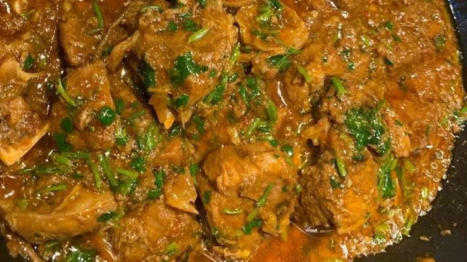

10 Traditional Pakistani Dishes

CULTURE TRADITIONS
20 Traditional Pakistani Dishes Everyone Needs To Try Once
Anastasianurullina/Getty Images
BY ELLANOR AQUITAINE/JAN. 26, 2023 9:12 AM EST
Pakistan, one of the world's most populous countries, is a relatively unknown destination for most food lovers. Yet, underneath the surface lies a wealth of beautiful landscapes, rich cultural heritage, and over 70 languages (via Translators without Borders), all of which inform the country's extensive food culture. Oft overshadowed by the world-renowned dishes of its neighbor, India, Pakistani cuisine shares many similarities — hearty, spicy, aromatic — because, until the partition of India in 1947, the British Raj ruled both countries under one name, according to The New Yorker. Pakistani cuisine also finds influence in the centuries-long occupation of the Mughal empire, which brought foods from Turkey, Uzbekistan, and Iran to its shores. In the modern era, remnants of history remain in many recipes, while some have adapted and changed over time.Perhaps more than any other factor, religion impacts the diet here. Per Every Culture, about 95% of the population adheres to Islam, meaning that you won't find pork (or its derivatives) or alcohol throughout the country. However, compared to the bordering Indian denizens, Pakistani people consume a lot of meat; most dishes are made with lamb, goat, beef, or chicken, although pulses are regularly enjoyed. Food is also celebratory;
in festivals such as Ramadan, observers fast through the day and then feast at night.
From city street food to the mountain tribe's mainstays, hot and tangy meat curries to succulent kebabs and nutty desserts, let's tuck into this amazing cuisin.
SINDHI BIRYANI
All other rice dishes pale in comparison to the biryani. Fluffy basmati rice is crucial, layered between yogurt-marinated meats, tangy tomato gravy, saffron milk, fresh mint, whole green chilis, and dried plums. While biryani appears in many versions across South Asia, the moniker is Persian: birinj biriyan, meaning fried rice (via BBC).
An indulgent dish once reserved for royals, Sindhi biryani, originating from the south-eastern province of Sindh, is now savored on feast days like weddings and Eid al-Fitr. It is of the pakki variety — meaning that the ingredients are pre-cooked, then layered in a pot, sealed, and slowly cooked on an open fire (on dum). It's spicier than its counterparts, with a pungent and peppery taste, alongside zesty sourness from fresh yogurt and dried plums introducing complex plays of spicy-sour notes.
FRUIT CHAAT
You may be familiar with fruit salad, but have you heard of fruit chaat? This Pakistani specialty uses local fruits such as guava, mango, pomegranate, citrus, grapes, apples, bananas, and plums, amongst many more. The fruits are cut into small, bite-sized pieces and soaked in orange juice to make them exceptionally sweet and juicy. However, what makes fruit chaat stand out from a typical fruit salad is a sprinkle of chaat masala and a dash of sugar. The chaat masala spice blend is tangy, sour, and spicy, so the fruits take on a much deeper depth of flavor.
Due to its refreshing nature, you'll find fruit chaat at every iftar feast (the sundown banquet after fasting during Ramadan). In summer, street food carts laden with fresh fruits will offer small plates of fruit chaat as nibbles.
HALEEM
Haleem is perhaps one of the most eminent dishes associated with Muslim communities across Pakistan, India, and Bangladesh. It's a unique dish made by slow-cooking wheat (or barley), meat (beef, mutton, or goat), and lentils with copious amounts of ghee, spices, rose petals, and nuts until richly fragrant and thick. Once garnished with julienned ginger, crispy caramelized onions, and zesty cilantro, it's irresistible to those who know its delights.This nutritious and hearty dish has a lengthy history. It originated in Iran, but haleem — as we would recognize it — arose in Hyderabad, India, during the reign of the sixth Nizam, Mahbub Ali Khan (per Brown History). Later, Muslims fleeing India for Pakistan during partition would bring the dish to Karachi, where it still enjoys much popularity today.
CHAPLI KABAB
No kebab shops in America can compare to the juicy, succulent, and crispy chapli kebab straight off the skillets of Peshawari street vendors. Imagine tender minced beef mince mixed with tomatoes, onions, tangy pomegranate seeds, green chili peppers, citrusy lemon juice, fresh herbs, eggs, and plenty of fresh spices: That's chapli kebab. It's best served with fluffy naan to soak up the juices and a crisp fresh salad.
According to The Localist, chapli kebabs derive their name from the local Pashto language, in which chaprikh means "flat" — mimicking the flat, round shape of the kebabs. We suggest you head to Peshawar, the capital of the Khyber Pakhtunkhwa province, for the best offerings. Many shops founded in the 1950s still draw crowds today, especially in the historic "Storyteller's Market," where it's tradition for locals to gather and dictate stories from the paste while eating kebabs.
NIHARI
No dish exemplifies Pakistan's love of meat more than nihari. Richly flavored with freshly toasted and ground whole spices, spoonful's of ghee, and plenty of peppery ginger, nihari utilizes inexpensive cuts of meat. Although mutton and beef shank are notorious for being tough, they transform into tender, succulent chunks ready to fall off the bone when cooked overnight. Atta (stone-ground wheat flour) helps to thicken the curry, making it perfect for mopping up with naan.
The name nihari derives from the Arabic "nahar," meaning "morning" (via Lahore Karahi). Stories tell that the Nawabs of Old Delhi would enjoy the dish in the early morning, after fajr (sunrise prayers). The curry was so hearty it was typical to nap after indulging! After Pakistan's independence in 1947, immigrants from Delhi brought nihari to Karachi, where it developed such a reputation it's now widely regarded as Pakistan's national dish.
SHEER KHURMA
Most ubiquitous across the country is sheer khurma, a delicately floral and creamy pudding made by slowly boiling milk rose-water infused until thick and creamy. Pistachios, almonds, sweet dates, raisins, flowery saffron, cardamon pods, and roasted semiya (fine vermicelli) perfume the sheer khurma with new flavors, making it an all-time favorite. Add sugar (or jaggery) to sweeten the silky pudding, but don't make the big mistake of adding too much sugar to sheer khurma — the dates and raisins add natural sweetness, so too much can overwhelm the dish.
CHANA CHAAT
The Mughal Empire is responsible for many things in the Indian subcontinent, from the Taj Mahal, gharara suits, and food. But did you know that the same man, Shahjahan, is responsible for devising the Taj Mahal and chaat? According to Slurrp, during the 16th century (before Pakistan became an independent country), a cholera outbreak caused physicians to recommend mixing water with tamarind, red chilis, and fresh herbs to kill bacteria; this was the beginning of chaat as we know it today.
HALWA PURI
Although the name, halwa, is identical to the Arabic word meaning "sweet confection" (via American Heritage Dictionary), this version is different from the creamy, nutty, tahini halwa you'll find on the streets of Israel. Pakistani sooji halwa is a soft, ghee-laced pudding made by cooking roasted semolina in water, sugar, and aromatic spices. You'll likely find it topped with silvered nuts, ready to be scooped up with crispy and puffy puri. In winter, cooks exchange semolina for grated carrots cooked with milk, a winter specialty called gajar ka halwa. The sweetness of either choice pairs well with tangy, spicy chana masala, so you'll often find them served alongside each other.
FALOODA
Falooda is a beloved favorite in Pakistan that bridges the gap between dessert and beverage. It likely has a history dating back to the Mughal Empire, as a notably similar dessert called faloodeh still exists in modern-day Iran (per NPR).
Once the swelteringly hot summer season comes along, only one thing is on everyone's mind: falooda. Found in specialist shops across Pakistan, a combination of vermicelli noodles, milk, basil seeds, and floral rose syrup (which gives the falooda its distinctive pink color) combine to make falooda. The dessert is typically served in a tall glass and garnished with chopped nuts, such as pistachios or almonds, along with a scoop of cold vanilla ice cream. While the rose syrup falooda is the most traditional and much-adored choice, modern variations include mango (topped with glacé cherries) and strawberry (with fruit jelly). Which will you try?
NAMKEEN GHOST

The mountainous valleys of Khyber Pakhtunkhwa, known as the land of the Pashtuns, are inhabited by hardened shepherds. Their specialty, namkeen gosht, is a slow-cooked and lightly spiced dish made from goat meat. Traditionally, the only spices used to marinate the meat would be salt, black pepper, sweet ginger, and animal fat. Indeed, according to Urdu Point, the moniker namkeen points to the ingredients; in Urdu, namkeen means "salty," from the root word namak, signifying "saltThese rustic flavors and the use of goat meat led to namkeen gosht becoming a staple dish during Eid Ul Adha, also known as Bakra Eid, which mandates sacrificing a goat (echoing the Biblical story of Ibrahim and Ishmael). Per Bawarchi, Akbar the Great introduced the dish to his court during Bakra Eid many centuries ago, and it has remained a mainstay ever since.